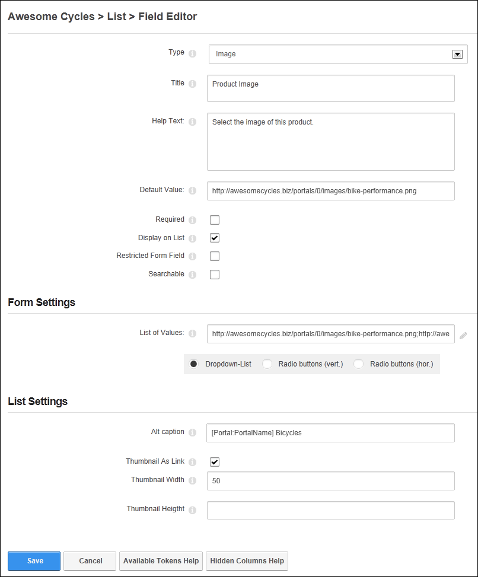
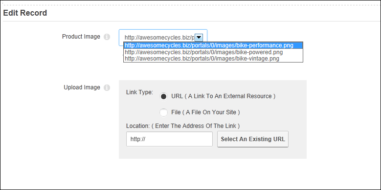
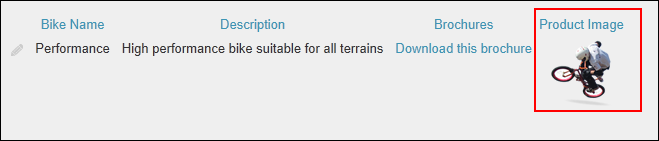

Adding an Image Field
How to add an image field to a form or list using the Form and List module. This column type allows form or list editors to either choose an image from a predetermined list or select (and optionally upload depending on user permission) an image from the site's Digital Asset Management module that is located on the Admin > File Management page using the Link Control. The chosen image is displayed on the list. This tutorial assumes you are currently adding an image column to a form or list (See "Creating a Form or List") or editing an existing image record. See "Editing List or Form Columns". Note: Both the "Default Value" and "List of Values" fields must be left blank to enable the Link Control that enables users to enter any URL or upload and/or select images from the site's Digital Asset Management module, located on the Admin > File Management page.
- In the Title text box, enter a title that will be displayed on the form or list for this field.
- In the Help Text text box, enter a help message to assist users who are adding or editing the data for this field.
- In the Default Value text box, enter the URL to the image that will be selected as the default for this field - OR - Leave this field blank to either display the first image entered into the "List of Values" below or, if the "List of Value" is blank, to display the Link Control which enables users to enter any image URL or select/upload an image from the Digital Asset Management module (located on the Admin > File Management page) depending on the user's permissions.
- At Required, if this field must be completed to submit the form or add a record to a list - OR - if this field as optional. This is the default setting.
- At Display on List, if this column is visible on the list in the normal grid view. This is the default setting. - OR - to set the field as visible to Administrators only.
- At Restricted Form Field, if this column is only visible to users/roles who have been added to the "Edit Also Restricted Columns" permission (See "Setting Form Permissions") - OR - if the column is visible to all users. This is the default setting.>
- At Searchable, if this column searchable using the Search Options configured for this module. This setting has no influence whether the field gets indexed for the side wide search - OR - if the column is not included in the module search. This is the default setting.
- Go to the Form Settings section.
- In the List of Values text box, leave this field blank to display the Link Control and allow users to select a file (and uploaded if permissions allow) from the Digital Asset Management module that is located on the Admin > File Management page. Skip to Step 9 - OR - Enter a definitive list of URL's separated by a semi-colon ( ; ) to set the images that can be selected. (E.g. http://www.awesomecycles.biz/bike-performance.png;http://www.awesomecycles.biz/bike-vintage.png) and then select how the list is displayed from these options:
- Dropdown-List: Display values in a drop down selection list. This is useful when there are a lot of values.
- Radio Buttons (Vert.: Display values in a vertical list with radio buttons.
- Radio Buttons (Hor.): Display values in a horizontal list with radio buttons
- Go to the List Settings section.
- In the Alt Caption text box, enter the alterative text for this image. Token replacement is enabled for this field.
- At Thumbnail as Link,
- Mark
 the check box to display a thumbnail of the image in the list that links to the original file. This field only applies to images uploaded and/or selected using the Link Control. Images listed in the "List of Values" will display as their original size.
the check box to display a thumbnail of the image in the list that links to the original file. This field only applies to images uploaded and/or selected using the Link Control. Images listed in the "List of Values" will display as their original size.- In the Thumbnail Width text box, enter the width for the thumbnail. Larger or smaller images will be scaled accordingly.
- In the Thumbnail Height text box, enter the height for the thumbnail. Larger or smaller images will be scaled accordingly. If the Image Width field is also set it will override this field rather than using both dimensions.
- Unmark
 the check box to display the original image in the list.
the check box to display the original image in the list.
- Click the Save button to save the field and return to the Form & List Configuration page.

Adding/editing an Image field

Setting an image on the Edit Record page. The "Product Image" field is the data entered into the Field Editor in the first image. The "Upload Image" field shows how the Image field can be used to enter any URL or select/upload any site file.

The Image field displayed in a List